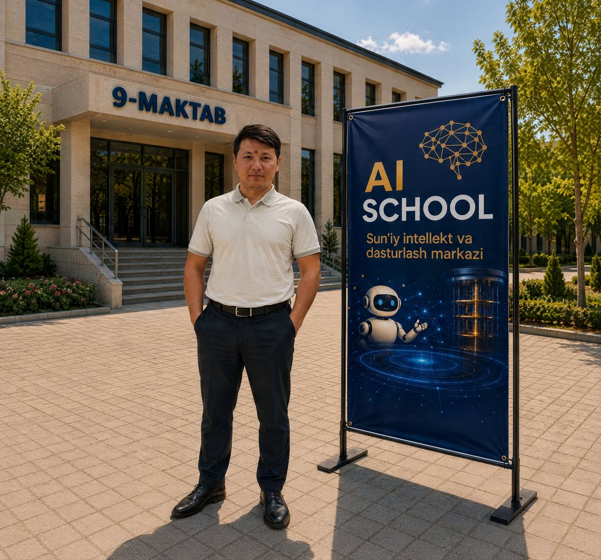

o‘rganing: Python
AI School maktabi
AI School — sun’iy intellekt va dasturlash markazi. Darslar zamonaviy kompyuterlar bilan jihozlangan informatika xonasida o‘tadi.

Nega AI School?
Zamonaviy kompyuter xonasi
Darslar zamonaviy kompyuterlar bilan jihozlangan informatika xonasida o‘tadi.
Uch tilda videodarslar
Har bir mavzu o‘zbek, rus va ingliz tillaridagi videolar bilan.
Amaliy loyihalar
Telegram bot, veb-ilova va sun’iy intellekt modellarini o‘zingiz yaratasiz.
Xavfsiz va reklamasiz sayt
Sayt ma’lumotlaringizni to‘plamaydi: cookie, reklama va kuzatuv yo‘q.
To‘rt qadamda noldan loyihagacha
Kompyuter
Windows, Word, Excel va internet asoslari.
Python
Dasturlashni noldan o‘rganish.
Sun’iy intellekt
Ma’lumotlar, modellar va neyron tarmoqlar.
Loyiha
Telegram bot yoki veb-ilova yaratish.
Ergashev Muxriddin
AI School asoschisi
Sun’iy intellekt fakulteti talabasi (TATU). Darslarda nazariya amaliyot bilan birga o‘tiladi.
BatafsilO‘quv qo‘llanmalar bosqichma-bosqich
Matnli qo‘llanmalar videolar bilan birga o‘rganishga yordam beradi.